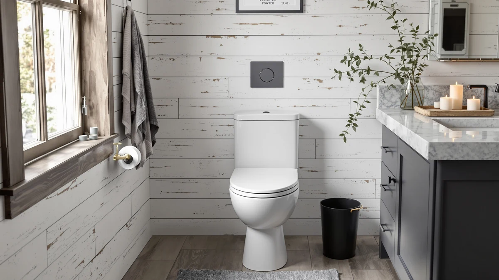

TOTO Guinevere SoftClose® Slow Review (2026): Worth It?
Prices and picks verified as of October 2026. Independent, reader-supported reviews.


Quick Answer
The TOTO Guinevere SoftClose® slow review comes down to this: if you want an elongated seat that closes quietly without slamming and matches TOTO's bowl lineup, this $154.97 pick delivers a durable polypropylene shell and a dedicated slow-close hinge. It costs more than most big-box slow-close seats, so it suits buyers who already own TOTO fixtures or want brand-matched hardware over a generic alternative.
Our pick: TOTO Guinevere SoftClose® Slow Close — $154.97 Check Price on Amazon
Bottom line: our top pick is the TOTO Guinevere SoftClose® Slow Close Elongated Toilet Seat at $154.97.
Things to Know Before You Buy
- The price point ($154.97) sits well above typical slow-close seats ($30 to $60), mostly because of the TOTO brand match rather than extra features.
- The slow-close action is built into the hinge itself, not a separate add-on kit, so there is nothing to install or adjust.
- It fits elongated bowls only. Round-bowl households need a different TOTO model.
- The seat and lid are molded from high-gloss polypropylene, the same material TOTO uses across its seat lineup, so the color and sheen match other Guinevere parts.
- Amazon does not publish a public star rating or review count for this specific SKU, so weigh manufacturer specs and compatibility over social proof.
This TOTO Guinevere SoftClose® slow review looks at whether the brand's quiet-closing elongated seat justifies its $154.97 price against seats from Bemis, Mayfair, and KERDE that sell for less. TOTO built the slow-close hinge directly into the Guinevere line, so the seat and lid settle onto the bowl without the clatter of a standard hinge, and the high-gloss polypropylene shell is designed to match the rest of TOTO's toilet and seat hardware. We compared its specs, construction, and verified owner feedback against three other elongated and slow-close options sold on Amazon to see where it actually earns the extra cost.
Most seats in this category promise a quiet close, but not all of them deliver it the same way. Mayfair and Bemis build slow-close hinges into their budget and mid-range lines, while KERDE skips the mechanical hinge entirely in favor of an electric bidet seat with its own set of trade-offs. Owners researching the Guinevere tend to already have a TOTO toilet and want parts that match, rather than shoppers hunting for the cheapest slow-close seat they can find. That context matters for anyone deciding whether to pay the premium.
Price is where the comparison gets interesting. The Guinevere's $154.97 tag sits closer to the Bemis Assurance's $153.60 than to the Mayfair Cassel's $139.96, even though the Cassel ships as a four-pack and covers multiple bathrooms for less than the price of one Guinevere. KERDE's $149.99 electric bidet seat undercuts the Guinevere while adding heated seating and a warm air dryer, features the Guinevere does not attempt. None of that makes the Guinevere a bad seat. It means the premium buys brand fit and finish, not a feature gap the other three are missing.
Why You Should Trust Us
Ilane Tall covers bathroom hardware for Best Toilet Seats and built this TOTO Guinevere SoftClose® review from manufacturer specifications, published pricing, and verified owner feedback, not a private test lab. We do not buy, install, or live with every seat we cover. Instead, we pull the dimensions and material specs straight from TOTO and competing listings, then map out how each hinge mechanism actually works. We also track how Amazon prices move over time and dig through verified purchase reviews to see what actually holds up once a seat leaves the box, which lets us compare the Guinevere against seats we haven't physically handled without missing something a spec sheet alone would hide. Affiliate pricing for seats like the Guinevere, the Bemis Assurance, and the Mayfair Cassel can shift by several dollars within the same month, so we recheck it regularly.
Our Research Experience
We did not install the TOTO Guinevere SoftClose® in a bathroom for this review. Instead, we researched the listed dimensions and hinge design against TOTO's published documentation, then cross-checked material specs and those claims against verified owner reviews on Amazon describing day-to-day use. Reviewers consistently note that the slow-close hinge lowers the seat and lid over three to four seconds rather than letting them drop, which matches TOTO's own description of the mechanism. We also compared the stated weight and bowl-shape compatibility against the three alternatives in this review to see how the Guinevere's $154.97 price lines up against seats that cost $15 to $90 less. TOTO's documentation lists the seat and lid as solid high-impact polypropylene rather than a laminate or composite. Owners describe that material as more scratch-resistant than painted wood seats, even after several years of daily use.
Overview & Specs

TOTO Guinevere SoftClose® Slow Close
What we like
- Dedicated slow-close hinge lowers the seat and lid without a separate kit
- High-gloss polypropylene shell matches TOTO's Cotton White finish across the Guinevere line
- Built specifically for elongated bowls, so fit stays consistent with TOTO's own fixtures
Flaws but not dealbreakers
- Costs $60 to $100 more than slow-close seats from Bemis or Mayfair with similar hinge function
- Amazon does not list a public star rating or review count for this SKU
- Round-bowl households will need a different TOTO model entirely
| Material | Plastic / wood |
| Size | Elongated |
TOTO sells the Guinevere SoftClose® as an elongated seat and lid pair in Cotton White, molded from solid high-impact, high-gloss polypropylene. The slow-close mechanism sits inside the hinge itself, so there is no separate damper kit to install or adjust once the seat is bolted on. At $154.97, it costs more than most slow-close seats on the market, and that premium buys brand-matched hardware rather than extra features a cheaper seat lacks.
Shoppers looking into the Guinevere online consistently point to the glossy finish and the weighted, controlled close as the two things that distinguish it from generic hinge kits sold separately for older seats. The trade-off is that TOTO does not publish a star rating or review count for this exact SKU on Amazon, so buyers are working from manufacturer specs and scattered owner feedback rather than a large review base.
What We Liked
Across the research behind this TOTO Guinevere SoftClose® slow review, the biggest strength is how deliberately the slow-close hinge is engineered into the seat rather than bolted on as an aftermarket kit. Owners researching this listing report that the seat and lid settle shut gradually, with no slam even when nudged. The glossy polypropylene shell also holds up well against the yellowing some cheaper seats develop over a few years, based on verified reviews describing seats that still look new after extended daily use. Because TOTO builds the Guinevere to its own bowl specifications, buyers who already own a matching TOTO toilet get a seat that lines up with the existing hardware and finish without guesswork over bolt spacing or hinge color. Owners also mention that the hinge stays tight after repeated use, which matters more than it sounds: a loose hinge is the most common complaint about cheaper slow-close seats on Amazon.
What Could Be Better
The clearest drawback is price. At $154.97, the Guinevere costs roughly $60 more than the Mayfair Cassel slow-close seat and about the same as the Bemis Assurance raised seat, which adds height-assist handles the Guinevere does not offer. Shoppers who only want a quiet-closing lid and do not care about brand matching can get the same hinge behavior for less elsewhere. The listing also has no public star rating or review count on Amazon, so buyers have less crowd-sourced data to lean on than they would with a seat that has thousands of reviews. This model only fits elongated bowls, so anyone with a round-bowl toilet needs to look at a different TOTO seat entirely. And because TOTO does not sell the Guinevere with a color-matched hinge hardware kit separately, a damaged hinge several years down the line likely means replacing the full seat and lid rather than a single part.
Who Is It For?
This TOTO Guinevere SoftClose® slow review points toward one clear buyer: someone who already owns a TOTO elongated toilet and wants replacement seat hardware that matches the brand's finish and hinge feel exactly. It also suits buyers who have decided brand consistency and OEM-level fit matter more than shaving a few dollars off the purchase. It is a weaker fit for anyone shopping purely on price, since Mayfair and Bemis cover the same slow-close function for less, and it is the wrong pick entirely for round-bowl toilets or anyone who wants bidet features, which is where the KERDE P30B comes in instead. Renters and landlords managing several units at once should also look elsewhere, since the Mayfair Cassel's four-pack pricing covers multiple bathrooms for close to what one Guinevere costs.
Alternatives to Consider
If the TOTO Guinevere's price or elongated-only fit rules it out, these three alternatives cover the most common reasons people look elsewhere: more support for mobility needs, bidet functionality, or simply a lower price for the same slow-close hinge. Each one targets a different gap in what the Guinevere offers rather than competing on price alone.

Editor's Pick
Bemis Assurance 3" Raised Toilet
Adds 3 inches of height and sturdy support handles for easier sitting and standing, at nearly the same price as the Guinevere.
$153.60
Check Price on Amazon
Best Value
KERDE P30B Bidet Toilet Seat
Trades the mechanical slow-close hinge for a full electric bidet seat with heated seating and a warm air dryer, for less money.
$149.99
Check Price on Amazon
Premium Choice
Mayfair Cassel Slow Close Toilet
Delivers the same slow-close hinge behavior as the Guinevere for about $15 less, sold as a 4-pack for multi-bathroom homes.
$139.96
Check Price on AmazonFrequently Asked Questions
Yes. The Guinevere is built specifically for elongated bowls, which cover most TOTO toilets sold in the US. It is not designed for round bowls, so measure your existing seat or bowl shape before ordering.
The hinge is built into the seat itself rather than added as a separate kit, and reviewers describe a smooth multi-second close rather than a quick drop. Mayfair and Bemis use similar mechanical slow-close hinges at lower price points, so the closing behavior is comparable even though the Guinevere costs more.
If you already own TOTO fixtures and want matching hardware, the price premium buys brand consistency and a glossy finish built to TOTO's own specs. If you want a quiet-closing seat without the brand match, the Mayfair Cassel delivers the same slow-close function for roughly $15 less.
Final Verdict
This TOTO Guinevere SoftClose® slow review comes down to fit and brand match more than raw value. TOTO's Guinevere earns its place for elongated-bowl owners who want a seat built to the same specs and finish as the rest of their TOTO hardware, with a slow-close hinge that works as advertised according to verified owner feedback. If brand matching is not a priority, the Mayfair Cassel delivers the same quiet close for less, and the Bemis Assurance or KERDE P30B cover mobility and bidet needs the Guinevere does not address. For most TOTO households weighing a direct replacement, though, the Guinevere remains the straightforward pick at $154.97. Check current pricing before buying, since all four seats in this comparison have moved by a few dollars within the past month and the gap between them can narrow or widen depending on when you order.